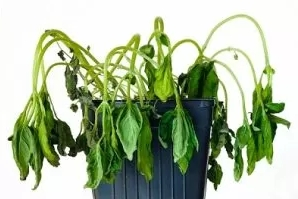
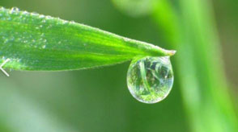

By the end of this lesson, you should be able to:
Transpiration is the loss of water in the form of water vapour from the aerial parts of plants, and mainly through the stomata of leaves into the atmosphere. Transpiration can also occur through the cuticle and lenticels

Plant wilting

Guttation
| Transpiration | Guttation |
|---|---|
| Loss of water in the form of water vapour | Loss of water in droplets form. |
| Occurs through the stomata, cuticle and lenticels | Occurs through hydathodes |
| Favoured by high temperature and low humidity | Favoured by low temperature and high humidity |
| Occurs mainly during the day | Occurs mainly at night or early morning |
| Occurs in all plants | Occurs mainly in herbaceous plants |
Transpiration is the loss of water in the form of water vapour from the aerial parts of plants, through the stomata of leaves, cuticle and lenticels into the atmosphere.
The rate of transpiration is affected by environmental factors such as light intensity, temperature, humidity, wind speed, atmospheric pressure and amount of soil water. Non-environmental factors such as leaf surface area, number of stomata and size of stomatal pores also affect the rate of transpiration.
Plants have various adaptations to reduce water loss by transpiration, such as thick cuticles, closing stomata during the day, smaller leaves, waxy coatings, sunken stomata, leaf hairs, rolling leaves and shedding leaves during dry seasons.
Transpiration has both useful and harmful effects on plants. It helps to cool the leaves, create suction pressure in the xylem, maintain turgidity of plant cells and maintain the water potential gradient between the soil and the leaves. However, excessive transpiration can lead to water stress, wilting and reduced growth and productivity in plants.
Guttation is the loss of water in the form of droplets from the edges of leaves through hydathodes. It is mainly driven by root pressure, and is favoured by low temperature and high humidity.
Wilting is the loss of turgor pressure in plant cells due to excessive transpiration. It can result in poor growth, reduced productivity in plants and even death.